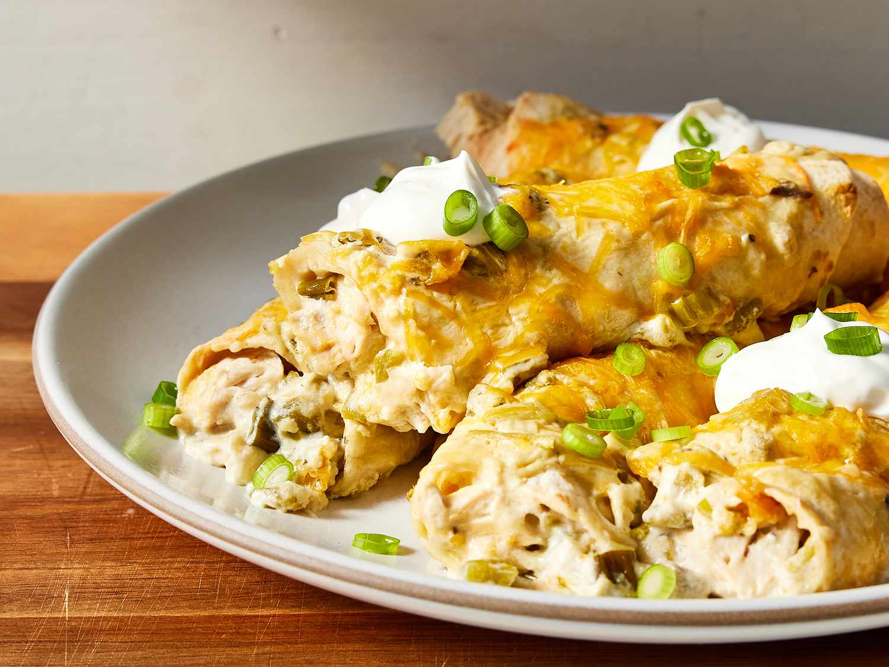

Chicken Enchiladas

Description
These easy chicken enchiladas feature corn tortillas stuffed with shredded chicken and cheese, topped with the best enchilada sauce, and even more cheese! They're baked until the cheese is deliciously melted and bubbly.
Ingredients
- 1 1/2 cups cooked shredded chicken
- 2 cups easy enchilada sauce, divided
- corn or flour tortillas
- 2 1/2 cups shredded Mexican-blend cheese, divided
- salt and black pepper, to taste
- optional toppings: diced onions, chopped cilantro, sour cream, shredded lettuce, cotija cheese
Steps
- Preheat oven to 350ºF. In a large bowl, combine the shredded chicken, ¼ cup enchilada sauce and a generous pinch of salt and pepper. Mix together and taste. Season with more salt and pepper as needed.
- If using corn tortillas: Wrap the tortillas in a damp paper towel and heat them in the microwave for 1 minute, flipping the them halfway through until all of them are warm and pliable.
If using flour tortillas: Microwave the tortillas on a plate for 1 minute, flipping them halfway through until all of them are warm and pliable.
- Assemble the enchiladas by filling each tortilla evenly with the shredded chicken mixture and 1 cup of shredded cheese. Roll the tortillas tightly to close and place in large baking dish seam side down.
- Pour the remaining 1 ¾ cup enchilada sauce over the tortillas, top with the remaining 1 ½ cups shredded cheese, and bake for 20 minutes until the cheese is melted and bubbly.
- Serve immediately and garnish with desired toppings.